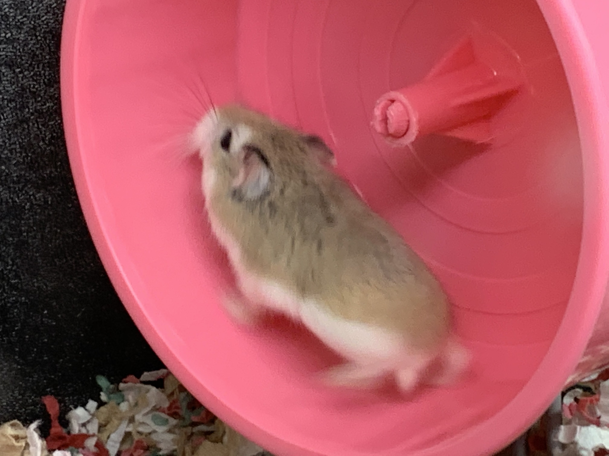
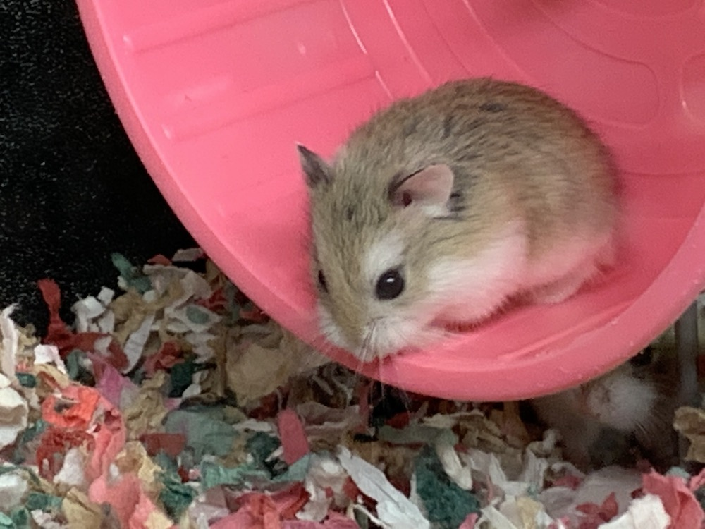
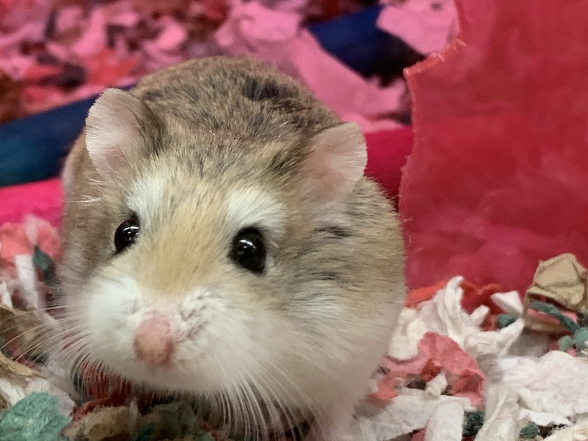
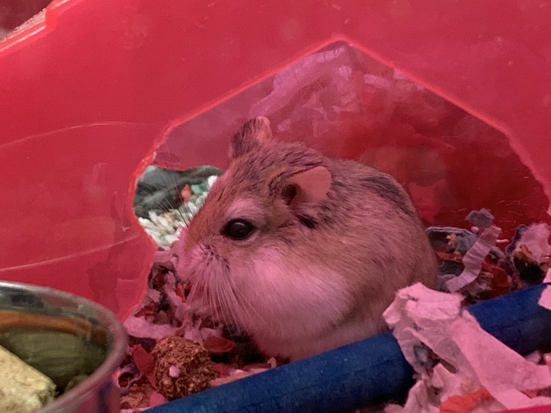

The Agile Hamster Wheel
SETTING THE STAGE:
Great news! - You have "achieved" Agile!
You have put together a backlog and a high-performing team. You
have a trained Scrum Master and Product owner. Your team is delivering product regularly and of
pretty high quality. What could possibly be wrong with this situation?
While there is nothing "wrong" with the above scenario, there are some things that can be improved.
I have heard the lather-rinse-repeat iterative cycles as used in Agile referred to as the
"Agile Hamster Wheel." Even when you are doing everything "right," there may still be a feeling of
boring similitude, a creeping malaise, and incrementally increasing discontent.
THE PROBLEM:
One thing that is not always understood about engineers is their desire or drive to know "why".
Engineers, the good ones, anyway, are like Sherlock Holmes. They need to get inside of a user's mind.
They want to know what the user is trying to do, why they are trying to do it, how fast they need it, etc.
It used to be that programmers were also "analysts". One used to see job descriptions for "programmer/analysts". That has gone by the wayside for several very good reasons.
1. Good engineers are hard to come by and expensive resources. Replacing engineers with "Business Analysts" and "Product Owners". Makes sense from an economic point of view. However, to do their jobs well, Product Owners and even BAs should optimally come from the same business domain as the product (best, even a previous customer or user) so that they are already up-to-speed on the problems at hand, speak the same language as the user, and are knowledgable about the problems users encounter every day. Unfortunately, that step is very frequently missed so the PO or BA is also trying to figure out what the customer is trying to do even as they are writing the requirements to solve the business problem.
2. Engineers are not always known for their "bedside manner". Some of them are very brusque (and speak unvarnished truths) with little or no filter. A business leader does not always want to expose their customer base to these individuals who *may* not put their business or product in the most favorable light.
So there are some good reasons why engineers are denied access to customers and put on separate floors, or back rooms and in cubicles. Some engineers even enjoy this treatment. Others crave direct customer interaction. They want to ask questions, they want to know what, when, how, and most especially why. They want to solve the customer's needs the absolute best way they can and many times that is by interacting with a customer and watching them work.
THE RESULTS:
This dynamic (that I have experienced countless times) is one of the BA/PO producing documentation in the form of user stories and wireframes with very little meaning. It is focused upon "what" with very little "how" and no "why".
By depriving engineers of direct customer experience, an unintended consequence is that they are also deprived of the "why" that will allow them to design and build better solutions for the customer.
An additional unintended consequence is that engineers are robbed of experience of solving the customer's/user's problems as they receive pre-processed solutions from the PO/BA team and have very little say in the design or implementation. This can cause engineering discontent and malaise. They feel that something is missing. Sometimes this frustration is expressed as anti-social behavior (once I saw an engineer's avatar on an internal chat program that depicted someone shoveling a pile of s..t). Sometimes this comes out in self-derogatory expressions of their work or themselves such as "I'm just a code-monkey, what do I know?" However, most of the time this lack of meaning in daily work is expressed as increasing discontent with the current employer, disinterest in solving day-to-day problems, and overall reduced effectiveness and throughput.
Even worse, by depriving the engineer of customer interaction, one is also unintentionally depriving the engineer of the joy of seeing their product being used. Sometimes they are the rightful recipient of praise or questions, or user frustration, all of which can be channeled to good use in the form of new features, updates, or bug fixes.

IN SHORT:
Imagine someone adept in the French language who wrote beautiful poetry but found their only way to make a living was to translate other people's poetry into French. Imagine how it must feel to be robbed of the creative elements and asked only to focus upon the most mundane part of their skillset.
By introducing POs and BAs that function as analysts, we have deprived engineers of some of their greatest tools in determining the best solutions for customers/users while at the same time robbing them of some of their greatest motivational joys, creative energies, and inspirations.
PROPOSED SOLUTION:
What if, instead of shielding engineering from the customer base, we created a structured forum through which they were able to observe, interact, and experience customers using the product first-hand?
What if we invested in having engineers experience the problems the customers experience first-hand? This might be through observing A/B testing or by having engineers actually use the product - as we used to say at HP, "drinking our own Chablis".
What if engineers were brought into product design as trusted peers and advisors and helped the POs and BAs design new functionality in the company of a customer or user representative? What if there were not a hand-off of requirements, but a collaboration of DEV, QA, BA, PO, and Customer/User representative?
I believe this would provide the following benefits:
- Improved engineering morale (less attrition, greater throughput)
- Better quality features
- Fewer defects
- Less rework
- Better overall customer/user satisfaction and customer experience

We know from software engineering economics, that the least expensive and best solutions are not always the obvious ones. engineers can be taught to work with customers. BAs, POs, and engineers can work together to come up with best-of-breed solutions...and Agile was meant to learn and grow from its mistakes, using low-stakes experiments to create a better world for all of us in the future.
I challenge Agile practitioners to allow Engineers back into the design world to build a better next generation of software. I assure you that I will be doing this and will also be reporting on my findings, here.
Thank you for reading and remember to feed your hamsters!
